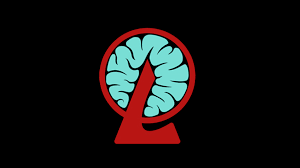

.jpg)

A Lobotomy Corporation foi fundada em 2003 com o objetivo de revolucionar o setor energético por meio de tecnologias inovadoras e fontes não convencionais de geração de energia. Atualmente, a empresa mantém operações em 12 países, com instalações estrategicamente localizadas e projetadas para máxima eficiência, segurança e confidencialidade.
Sob a perspectiva de sua gestão , a Lobotomy Corporation se destaca por seu modelo único de produção energética, baseado na pesquisa e utilização controlada de fenômenos especiais. Esse sistema permite uma geração de energia altamente eficiente e sustentável, posicionando a empresa como uma referência emergente no campo de energia experimental. A organização investe continuamente em tecnologia, automação e treinamento especializado, garantindo padrões elevados de operação.
A Lobotomy Corporation foi idealizada no início dos anos 2000 por um pequeno grupo de cientistas e investidores visionários que buscavam soluções energéticas além dos limites da ciência tradicional. Começando como um projeto experimental discreto, a empresa cresceu rapidamente após demonstrar resultados inéditos na geração de energia, atraindo financiamento internacional e expandindo suas operações para diversos países. Ao longo dos anos, consolidou-se como uma organização altamente especializada e tecnologicamente avançada, superando desafios técnicos e estruturais com inovação constante. Atualmente, a Lobotomy Corporation se encontra em uma posição sólida no mercado energético experimental, operando em escala global e buscando novos parceiros estratégicos para continuar sua expansão e liderança no setor.